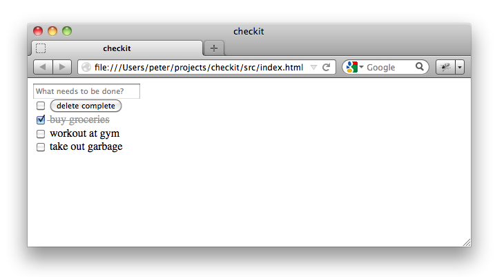

We have things to do. Let’s use Maria to build an application called “checkit” to organize our to-dos.

By the end of this tutorial, you’ll understand how the components of an application written in the MVC style with Maria communicate and be ready to create more complex client-side application on your own.
Let’s go...
There are generic libraries out there in the world that are written, ready, and just waiting for us to download for use in our application. There is application-specific source code that we will write. Create a checkit/ directory to contain the entire application with lib/ and src/ sub-directories to keep these two types of files separate.
To give our application structure, we'll use the Maria framework. Download the latest version from the following link and save it as checkit/lib/maria/maria.js.
http://peter.michaux.ca/downloads/maria/rc2/maria.js
In this application, we’ll need to manipulate the class attribute values of DOM elements. We’ll use the Aristocrat library. Download the latest version from the following link and save it as checkit/lib/aristocrat/aristocrat.js.
http://peter.michaux.ca/downloads/aristocrat/1/aristocrat.js
The conventions built into Maria expect our application classes are all properties of a single namespace object. Create a file checkit/src/js/namespace.js defining our namespace object.
var checkit = {};It’d be great if every miscellaneous utility function we need in our application was available in a third-party library; however, that is rarely the case in any application. Create a checkit/src/js/util.js file where we’ll add utility functions as we find needs for them.
We are building an application for organizing to-dos. For each individual thing we need to do, we’ll create a model object representing that individual to-do. As life moves along, we’ll think of more things to do and hopefully we’ll actually get some things done. We'll add and delete individual to-do objects from another kind of model object representing a set of to-dos.
Create a checkit/src/js/models/ directory to contain both of our model classes.
checkit.TodoModel ClassLet’s start by designing a class for an individual to-do. The two fundamental questions we’ll ask a to-do model are:
We’ll use the maria.Model class as the parent class for our checkit.Todo class.
maria.Model.subclass(checkit, 'TodoModel', {
properties: {
_content: '',
_isDone: false,
getContent: function() {
return this._content;
},
setContent: function(content) {
content = checkit.trim('' + content);
if (this._content !== content) {
this._content = content;
this.dispatchEvent({type: 'change'});
}
},
isDone: function() {
return this._isDone;
},
setDone: function(isDone) {
isDone = !!isDone;
if (this._isDone !== isDone) {
this._isDone = isDone;
this.dispatchEvent({type: 'change'});
}
},
toggleDone: function() {
this.setDone(!this.isDone());
}
}
});The checkit.trim function is an example of a utility function that we’ll add to our checkit/src/js/util.js file.
checkit.trim = function(str) {
return str.replace(/^\s+|\s+$/g, '');
};To find out more about the this checkit.TodoModel class, let’s get our hands dirty and experiment in a browser console like Firebug. Create an HTML document called checkit/src/index.html that loads both the libraries and our application code.
<!DOCTYPE html>
<html>
<head>
<title>checkit</title>
</head>
<body>
<script src="../lib/maria/maria.js"></script>
<script src="../lib/aristocrat/aristocrat.js"></script>
<script src="js/namespace.js"></script>
<script src="js/util.js"></script>
<script src="js/models/TodoModel.js"></script>
</body>
</html>With the above page loaded in the browser, we can interactively explore in the console.
Create a new to-do and check its default content and done values.
> var todoModel = new checkit.TodoModel();
undefined
> todoModel.getContent();
""
> todoModel.isDone();
falseLet’s make the to-do more motivating to do.
> todoModel.setContent('test drive Ferrari');
undefined
> todoModel.getContent();
"test drive Ferrari"
Looking good so far but those are just getters and setters. We haven’t seen any MVC magic yet. The observer pattern is the first bit of MVC magic we’ll explore.
In most MVC applications, a model object communicates with one or more view objects via the observer pattern. It is a very loose coupling between a model and the views as the model object doesn’t know or even care about what the view objects are doing. When a particular event type happens on the model, the model notifies all the views who’ve added themselves as observers of that event type on that view. This gives the views an opportunity to react to the model’s event. Typically a view object wants to keep its visual representation up-to-date to match the model object’s current state.
Let’s see the observer pattern relationship between a to-do model object and fake view object.
We create a fake view object and add it as an observer of the to-do model object.
> var view = {update: function(evt) {console.log('The model changed!')}};
undefined
> maria.addEventListener(todoModel, 'change', view, 'update');
undefinedNow a change to the model object’s done value will cause the model to call the view’s update method.
> todoModel.setDone(true);
"The model changed!"
undefinedIf we remove the observer from the model and change the done value again, we see the view is no longer notified.
> maria.removeEventListener(todoModel, 'change', view, 'update);
undefined
todoModel.setDone(false);
undefined
Try adding multiple fake views as observers of one model. Try calling todoModel.setDone(true) multiple times consecutively. What information does the evt object contain that is passed to the observer's method? Experiment. Explore.
If you are a devout test-driven developer, you’re surely disappointed that code’s been written but tests haven’t. Forgive us. We have sinned. Now is a good time to repent and make amends. Add your test library in a subdirectory of checkit/lib/ if necessary, your tests in a checkit/tst/ or checkit/spec/ directory, and float your boat. By the way, I recommend you check out the great Buster automated testing tools which are used for testing the Maria source code.
There’s never enough time in life for all things we want to do. We need to manage a set of to-dos. Let’s create a class who’s objects can do just that.
An object of the maria.SetModel class is an unordered set that can hold any number of other model objects. Observers of a set model are notified when those other model objects are added or deleted from the set. We can subclass maria.SetModel as a starting point for our checkit.TodosModel class in a file checkit/src/js/models/TodosModel.js.
maria.SetModel.subclass(checkit, 'TodosModel', {
properties: {
getDone: function() {
return this.filter(function(todo) {
return todo.isDone();
});
},
isAllDone: function() {
return (this.length > 0) &&
(this.getDone().length === this.length);
},
isAllUndone: function() {
return this.getDone().length < 1;
},
markAllDone: function() {
this.forEach(function(todo) {
todo.setDone(true);
});
},
markAllUndone: function() {
this.forEach(function(todo) {
todo.setDone(false);
});
},
deleteDone: function() {
this['delete'].apply(this, this.getDone());
}
}
});Add this file to the checkit/src/index.html page, reload the browser, and explore some more.
Create a set for to-dos and add an observer who will log to-dos added to an the set.
> var todosModel = new checkit.TodosModel();
undefined
> var view = {update: function(evt) {console.log(evt.addedTargets.map(function(todo) {return todo.getContent();}));}};
undefined
> maria.addEventListener(todosModel, 'change', view, 'update');
undefinedNow add a to-do to the set.
> var todoModel = new checkit.TodoModel();
undefined
> todoModel.setContent('dinner date with Maria');
undefined
> todosModel.add(todoModel);
["dinner date with Maria"]
undefinedThere are a few things we should probably do before our date. Let’s add them.
> var flowers = new checkit.TodoModel();
undefined
> flowers.setContent('buy flowers');
undefined
> var shower = new checkit.TodoModel();
undefined
> shower.setContent('take a shower');
undefined
> todosModel.add(flowers, shower);
["buy flowers", "take a shower"]
undefinedWe see that adding multiple to-do models to the set with one call to the set’s add method means only one event is fired. This can be good for efficiency by reducing the number of updates views have to do.
When we go out and buy the flowers, we’ll mark the corresponding to-do as done. Let’ change the view’s update method so we can examine what happens to the set when the to-do is marked as done. Remember the view is observing the set.
> view.update = function(evt) {console.log(evt.target.constructor === checkit.TodoModel, evt.currentTarget.constructor === checkit.TodosModel);};
function()
> flowers.setDone(true);
true true
undefined
What’s important to note above is that the evt.target is the flowers to-do but that the event bubbles up to the containing to-dos set which is the evt.currentTarget. This bubbling makes it possible for views to observe all the activity on an entire set of models without our application code having to manually add and remove the view as an observer for each model in the set.
We might want to clean up our to-dos set by deleting all the to-do models that are done.
> todosModel.deleteDone();
undefined
> todosModel.length;
2
You may have noticed that the implementation of the deleteDone method contains this['delete'] syntax. Since delete is a JavaScript keyword, older browsers did not allow us to write the simpler this.delete syntax. If you are only need to support newer browsers, you can use the simpler version.
Our model layer is complete.
Well. The tests. Yes, yes. Please write them.